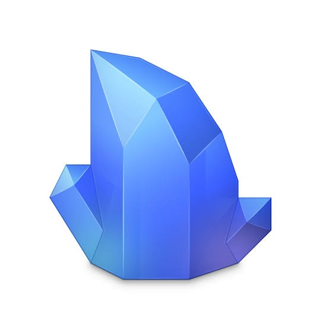
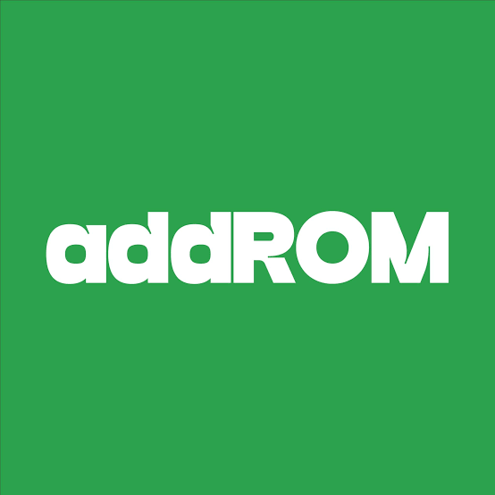
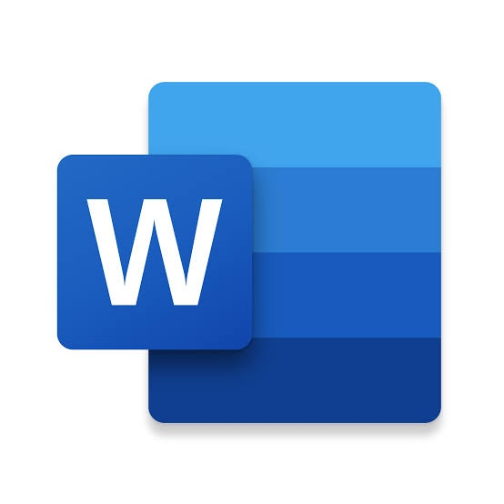
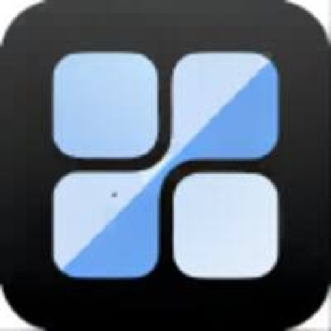
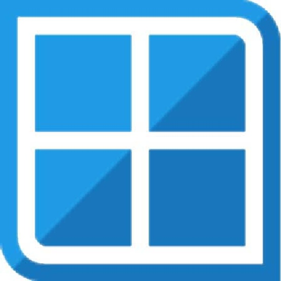
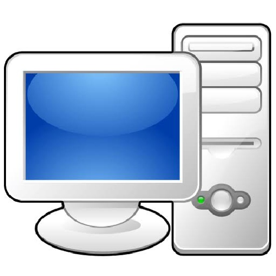
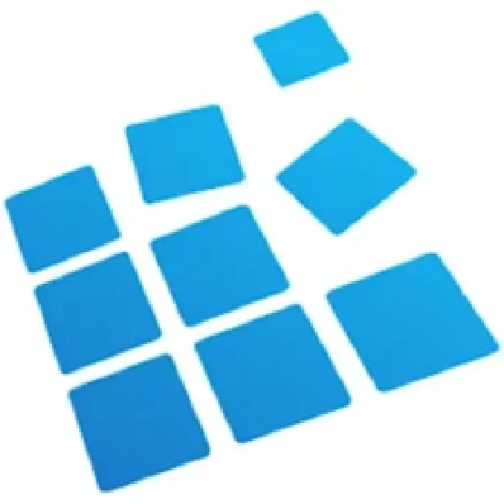
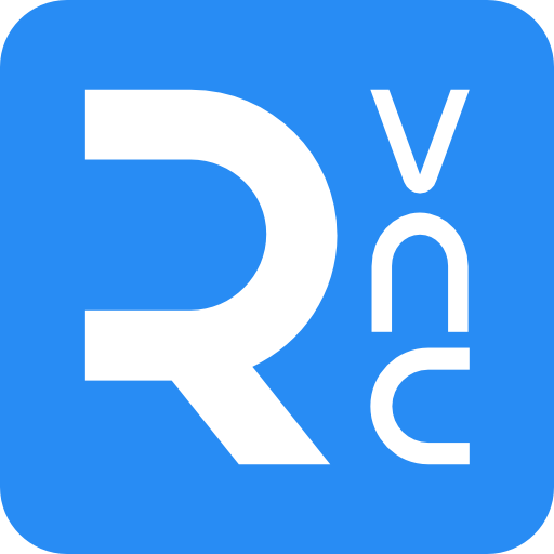
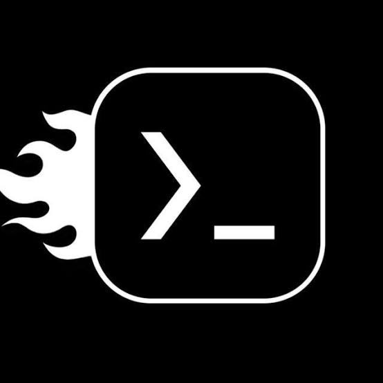

Bienvenue dans la section Découvrir plus
Bienvenue, chers explorateurs ! Je suis ravi de vous accueillir dans cet espace où vous découvrirez une sélection incontournable de sites à explorer. Ici, vous trouverez des ressources fascinantes et des expériences enrichissantes qui éveilleront votre curiosité et nourriront votre soif de découverte. Laissez-vous inspirer par tout ce que vous allez découvrir. Chaque visite est une nouvelle occasion de vous émerveiller et d’apprendre quelque chose de nouveau. Nous sommes impatients de vous accompagner dans cette aventure passionnante et de vous offrir des trésors à chaque coin. Revenez souvent pour explorer les dernières nouveautés et continuer à élargir vos horizons. Votre voyage commence ici, et nous sommes enchantés de vous y guider !
Alors, que cherchez-vous ?

Les sites incroyables à découvrir en
Similarweb
SimilarWeb est un outil d'analyse web qui fournit des données sur le trafic des sites internet, leur audience, les sources de trafic et les performances. Il permet aux utilisateurs de comparer des sites, d'analyser des concurrents et de découvrir des tendances du marché numérique.
AlternativeTo
AlternativeTo est une plateforme qui permet de trouver des alternatives à des logiciels et applications populaires. Les utilisateurs peuvent rechercher des outils en fonction de catégories, de fonctionnalités et de plateformes, tout en consultant des avis et des notes d'autres utilisateurs.
Les sites utiles pour mobiles et pc en
Ninite
Ninite est un site qui permet de télécharger et d'installer plusieurs applications Windows en une seule fois. Il propose une interface simple où les utilisateurs peuvent sélectionner des logiciels gratuits, puis générer un installateur unique qui effectue les installations en arrière-plan sans intervention. Idéal pour configurer rapidement un nouvel ordinateur.
Webcatalog
WebCatalog est un site qui permet de télécharger et d'installer des applications web en tant que programmes de bureau. Il offre une interface simple pour gérer des applications en ligne comme Slack, Trello et WhatsApp, tout en permettant des notifications et un accès hors ligne. Idéal pour centraliser l'utilisation des services web.
AddROM
AddROM est un site qui propose des solutions pour accéder aux appareils Android après un réinitialisation d'usine, en fournissant des tutoriels et des outils adaptés.
Frpbypass
Frpypass est un site qui propose des solutions et des outils pour réinitialiser les appareils Android verrouillés après un formatage.
Word.new
Word.new est une plateforme en ligne qui permet de créer instantanément un document Word vierge en un clic, sans avoir besoin de naviguer dans un menu ou une application. C'est une solution rapide pour commencer à rédiger des documents directement via votre navigateur.
iTop Easy Desktop
iTop Easy Desktop est un logiciel qui organise et classe les fichiers et dossiers sur le bureau de manière propre et efficace. Il permet de créer des groupes personnalisés, de trier les éléments rapidement, et d'améliorer la productivité avec une interface claire et intuitive.
Winlator
Winlator est un émulateur Windows pour Android qui permet d'exécuter des applications Windows sur des appareils Android. Il offre une interface utilisateur intuitive et prend en charge de nombreuses applications de bureau.
Limbo
Limbo est un émulateur qui permet d'exécuter des systèmes d'exploitation comme Windows et Linux sur des appareils Android. Il offre une interface simple et prend en charge divers formats d'image disque, idéal pour tester des systèmes d'exploitation sur mobile.
Exagear
Exagear est un émulateur qui permet de faire fonctionner des applications Windows sur des appareils Android. Il offre une interface conviviale et supporte divers logiciels, rendant l'accès aux applications de bureau possible sur mobile.
VNC Viewer
VNC Viewer pour Android permet d'accéder à distance à des ordinateurs depuis un appareil mobile. Il offre une interface conviviale, un accès sécurisé via cryptage, et prend en charge le partage d'écran, idéal pour le support technique et la gestion à distance.
TeamViewer
TeamViewer permet l'accès à distance à des ordinateurs et appareils mobiles. Il offre des fonctionnalités de partage d'écran, d'assistance technique, et de transfert de fichiers, le tout avec un cryptage sécurisé. Idéal pour le support à distance et la collaboration.
Mobox
Mobox Emulator permet d'exécuter des logiciels PC sur Android en utilisant l'environnement Termux. Il facilite l'accès aux applications de bureau, offrant une expérience similaire à celle d'un ordinateur sur un appareil mobile.
Userland
UserLAnd permet d'exécuter des distributions Linux sur Android sans nécessiter de root. Il facilite l'installation et l'utilisation d'environnements Linux, permettant d'accéder à des outils et applications Linux directement sur un appareil mobile.
Les chaines tiktok à suivre pour découvrir plus en
Maxime Astuces
Pour plus de découvertes
Gabriel l'astucieux
Pour plus de découvertes
Victor Web3
Pour plus de découvertes
Melissa Tauqnam
Pour plus de découvertes
Hugues T
Pour plus de découvertes
Disiz Yyov
Pour plus de découvertes
Xavier Dom
Pour plus de découvertes